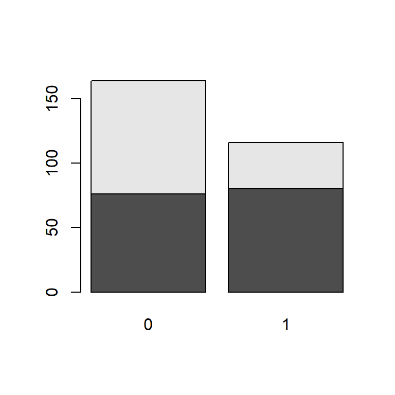

Kapitel 5 Binära variabler
En nödvändig färdighet vid arbete med data är att kunna hantera och analysera kategorivariabler. Vi börjar i detta kapitel med det enkla fallet binära variabler för att i ett senare kapitel övergå till att studera hur man arbetar med variabler som har fler än två kategorier.
5.1 Deskription av en binär variabel
Detta avsnitt fokuserar på analys av binära kategorivariabler. I princip alla datamaterial innehåller variabler med två kategorier och även om data inledningsvis inte innehåller binära variabler är det vanligt att av olika skäl omkoda kvantitativa variabler till variabler med två kategorier. För nybörjaren kan det vara förvirrande att det finns åtminstone två alternativ, som bägge är viktiga, för hur man arbetar med binära variabler.
- Alternativ 1. En binär kategorivariabel hanteras som en numerisk variabel efter att kategorierna tilldelats numeriska värden. Exempelvis kan vi ange att värdena 0 och 1 representerar två kategorier. Observera att val värden påverkar hur variabeln används i analysen.
- Alternativ 2. En binär kategoriabel definieras med funktionen factor()som datatypen faktor. En faktors kategorier benämns i R för levels (nivåer). Fördelen med att definiera en variabel som faktor är att R kan använda information om den binära variabeln i analyser och resultat. Till exempel kan kategoriernas namn presenteras i resultat. Dessutom kräver en del metoder i R en faktor-variabel. Observera att det, av förklarliga skäl, inte går att utföra räkneoperationer på variabler definierade som datatypen faktor.
Eftersom bägge varianterna har för- och nackdelar återfinns ofta bägge varianter av kodning för en och samma binära variabel i ett dataset — en numerisk version kodad 0-1 kallad för variabelnamn_bin och version kodad som faktor kallad variabelnamn_cat.
Oavsett om en binär variabel har kategorier som inte går att rangordna (till exempel variabeln \(kön\) med kategorierna \(kvinna\) och \(man\)) eller har kategorier som går att rangordna (till exempel \(utbildning\) med kategorierna \(låg\) och \(hög\)) beskrivs en binär variabel på samma sätt. Vi ska nu presentera visa hur man beskriver en binär variabel, utifrån de tidigare två nämnda alternativen.
Vi exemplifierar med att beskriva variabel som heter \(education\) som har två kategorier, \(low\) och \(high\) och som vi läser in nedan. Med funktionen str() identifieras att \(education\) är en variabel med datatypen character. Det är alltid viktigt att undersöka variablers datatyp, emellertid är detta ingen kod som sedan sparas i scriptet. Efter datatypen är undersökt kan denna rad med kod tas bort från scriptet. Funktionen str() är användbar för att undersöka alla typer av objekt i R, till exempel variabler, dataframes och objekt som innehåller sparade resultat.
# Ursprungsvariabel, data du har erhållit.
education <- c("high", "high", "low", "high", "high", "low", "high", "low",
"low", "high", "high", "high", "high", "high", "high", "low",
"high", "high", "high", "high", "high", "high", "high", "high",
"high", "low", "high", "high", "high", "low", "high", "high",
"low", "high", "high", "high", "low", "low", "high", "low",
"high", "high", "low", "high", "high", "low", "high", "low",
"low", "high", "high", "high", "high", "high", "high", "low",
"high", "high", "high", "high", "high", "high", "high", "high",
"high", "low", "high", "high", "high", "low", "high", "high",
"low", "high", "high", "high", "low", "low", "high", "low",
"low","low","low","low","low","low","low","low","low","low",
"low","low","low","low","low","low","low","low","low","low",
"low","low","low","low","low","low","low","low","low","low",
"low","low","low","low","low","low","low","low","low","low",
"low","low","low","low","low","low","low","low","low","low",
"low","low","low","low","low","low","low","low","low","low",
"high", "high", "low", "high", "high", "low", "high", "low",
"low", "high", "high", "high", "high", "high", "high", "low",
"high", "high", "high", "high", "high", "high", "high", "high",
"high", "low", "high", "high", "high", "low", "high", "high",
"low", "high", "high", "high", "low", "low", "high", "low",
"high", "high", "low", "high", "high", "low", "high", "low",
"low", "high", "high", "high", "high", "high", "high", "low",
"high", "high", "high", "high", "high", "high", "high", "high",
"high", "low", "high", "high", "high", "low", "high", "high",
"low", "high", "high", "high", "low", "low", "high", "low",
"low","low","low","low","low","low","low","low","low","low",
"low","low","low","low","low","low","low","low","low","low",
"low","low","low","low","low","low","low","low","low","low",
"low","low","low","low","low","low","low","low","low","low",
"low","low","low","low","low","low","low","low","low","low",
"low","low","low","low","low","low","low","low","low","low")
# Undersök hur R identifierar variabelns datatyp
str(education)
> chr [1:280] "high" "high" "low" "high" "high" "low" "high" "low" ...Med Alternativ 1 tilldelas de två kategorierna i den binära variabeln numeriska värden och variabeln analyseras sedan som en numerisk variabel. Det är vanligast att ge kategorierna värdena 0 och 1. En anledning är tolkningen blir i termer av andelar av den kategori som är kodad 1.
Exemplet nedan illustrerar hur man med det numeriska alternativet kan beskriva den ursprungliga variabeln \(education\) som har kategorierna \(low\) och \(high\). Den uppenbara fördelen med att kodningen 0-1, jämfört med 1-2, är att 0-1 ger en bekväm tolkning eftersom medelvärdet då är proportionen.
Kommandot str() identifierar nu att både edu_bin och edu_12 är av typen numeric.
Med mean() och summary() erhålls information som beskriver edu_bin och edu_12. Vi ser att 41% har hög utbildning. Däremot ser vi inte hur många som har låg respektive hög utbildning.
# Numerisk kodning: 0 = low, 1 = high
edu_bin <- rep(NA, length(education))
edu_bin[education == "high"] <- 1
edu_bin[education == "low"] <- 0
str(edu_bin)
> num [1:280] 1 1 0 1 1 0 1 0 0 1 ...
phat <- mean(edu_bin)
phat
> [1] 0.4142857
summary(edu_bin)
> Min. 1st Qu. Median Mean 3rd Qu. Max.
> 0.0000 0.0000 0.0000 0.4143 1.0000 1.0000
# Numerisk kodning: 1 = low, 2 = high
edu_12 <- rep(NA, length(education))
edu_12[education == "high"] <- 2
edu_12[education == "low"] <- 1
summary(edu_12)
> Min. 1st Qu. Median Mean 3rd Qu. Max.
> 1.000 1.000 1.000 1.414 2.000 2.000Med Alternativ 2 används funktionen factor() för skapa en faktorvariabel edu_cat
Kommandot str() identifierar nu att edu_cat har två nivåer med kategorinamnen
“low” and “high”. R tilldelar automatiskt kategorierna nivåer, där “high” är level 1 och “low” är level 2. Observera att nivåer används för att bestämma en rangordning och kan inte användas i aritmetiska beräkningar. Även om valet av nominal- eller ordinalskala i teorin saknar betydelse för en binär variabel är det viktigt att veta ordningen på nivåerna om man hanterar variabeln som en faktor.Det finns nämligen analyser i R där ordningen spelar roll. Nivåerna bestäms utifrån den ordning kategorierna dyker upp i variabeln såvida inte en numerisk variabel görs om till en faktor.
Faktorvariabeln kan beskrivas med summary() som redovisar antalet inom respektive utbildningskategori. Däremot kan vi inte använda mean() och därmed inte fram andelen med denna funktion.
Det går att i funktionen factor() använda argumentet levels för att manuellt ange nivåerna. Dessutom kan det i detta exempel uppfattas som förvirrande för användaren att “high” har tilldelats nivå 1 medan “low” är nivå 2. Av dessa skäl ändras därför ordningen med hjälp av argumentet levels.
Vid arbete med faktorer används ofta en funktion (ej att förväxla med argumententet levels() för att ändra kategorinamn.I exemplet nedan används denna funktion för att ändra kategorinamn på \(edu_cat\). Koden för att ändra namn är inte uppenbar för nybörjaren och det är enklast om du kopierar koden nedan och ändrar den efter dina behov.
# Skapa en faktorvariabel
edu_cat <- factor(education)
str(edu_cat)
> Factor w/ 2 levels "high","low": 1 1 2 1 1 2 1 2 2 1 ...
mean(edu_cat)
> Warning in mean.default(edu_cat): argument is not numeric or logical:
> returning NA
> [1] NA
summary(edu_cat)
> high low
> 116 164
# Test att utföra en räkneoperation på en faktorvariabel
mean(edu_cat)
> Warning in mean.default(edu_cat): argument is not numeric or logical:
> returning NA
> [1] NA
# Ändra ordningen på nivåerna
edu_cat <- factor(education, levels = c("low", "high"))
str(edu_cat)
> Factor w/ 2 levels "low","high": 2 2 1 2 2 1 2 1 1 2 ...
summary(edu_cat)
> low high
> 164 116
# Ändra för valt element namn i vektor levels(education_cat)
levels(edu_cat)[levels(edu_cat) == "low"] <- "Låg utbildning"
levels(edu_cat)[levels(edu_cat) == "high"] <- "Hög utbildning"
edu_cat
> [1] Hög utbildning Hög utbildning Låg utbildning Hög utbildning
> [5] Hög utbildning Låg utbildning Hög utbildning Låg utbildning
> [9] Låg utbildning Hög utbildning Hög utbildning Hög utbildning
> [13] Hög utbildning Hög utbildning Hög utbildning Låg utbildning
> [17] Hög utbildning Hög utbildning Hög utbildning Hög utbildning
> [21] Hög utbildning Hög utbildning Hög utbildning Hög utbildning
> [25] Hög utbildning Låg utbildning Hög utbildning Hög utbildning
> [29] Hög utbildning Låg utbildning Hög utbildning Hög utbildning
> [33] Låg utbildning Hög utbildning Hög utbildning Hög utbildning
> [37] Låg utbildning Låg utbildning Hög utbildning Låg utbildning
> [41] Hög utbildning Hög utbildning Låg utbildning Hög utbildning
> [45] Hög utbildning Låg utbildning Hög utbildning Låg utbildning
> [49] Låg utbildning Hög utbildning Hög utbildning Hög utbildning
> [53] Hög utbildning Hög utbildning Hög utbildning Låg utbildning
> [57] Hög utbildning Hög utbildning Hög utbildning Hög utbildning
> [61] Hög utbildning Hög utbildning Hög utbildning Hög utbildning
> [65] Hög utbildning Låg utbildning Hög utbildning Hög utbildning
> [69] Hög utbildning Låg utbildning Hög utbildning Hög utbildning
> [73] Låg utbildning Hög utbildning Hög utbildning Hög utbildning
> [77] Låg utbildning Låg utbildning Hög utbildning Låg utbildning
> [81] Låg utbildning Låg utbildning Låg utbildning Låg utbildning
> [85] Låg utbildning Låg utbildning Låg utbildning Låg utbildning
> [89] Låg utbildning Låg utbildning Låg utbildning Låg utbildning
> [93] Låg utbildning Låg utbildning Låg utbildning Låg utbildning
> [97] Låg utbildning Låg utbildning Låg utbildning Låg utbildning
> [101] Låg utbildning Låg utbildning Låg utbildning Låg utbildning
> [105] Låg utbildning Låg utbildning Låg utbildning Låg utbildning
> [109] Låg utbildning Låg utbildning Låg utbildning Låg utbildning
> [113] Låg utbildning Låg utbildning Låg utbildning Låg utbildning
> [117] Låg utbildning Låg utbildning Låg utbildning Låg utbildning
> [121] Låg utbildning Låg utbildning Låg utbildning Låg utbildning
> [125] Låg utbildning Låg utbildning Låg utbildning Låg utbildning
> [129] Låg utbildning Låg utbildning Låg utbildning Låg utbildning
> [133] Låg utbildning Låg utbildning Låg utbildning Låg utbildning
> [137] Låg utbildning Låg utbildning Låg utbildning Låg utbildning
> [141] Hög utbildning Hög utbildning Låg utbildning Hög utbildning
> [145] Hög utbildning Låg utbildning Hög utbildning Låg utbildning
> [149] Låg utbildning Hög utbildning Hög utbildning Hög utbildning
> [153] Hög utbildning Hög utbildning Hög utbildning Låg utbildning
> [157] Hög utbildning Hög utbildning Hög utbildning Hög utbildning
> [161] Hög utbildning Hög utbildning Hög utbildning Hög utbildning
> [165] Hög utbildning Låg utbildning Hög utbildning Hög utbildning
> [169] Hög utbildning Låg utbildning Hög utbildning Hög utbildning
> [173] Låg utbildning Hög utbildning Hög utbildning Hög utbildning
> [177] Låg utbildning Låg utbildning Hög utbildning Låg utbildning
> [181] Hög utbildning Hög utbildning Låg utbildning Hög utbildning
> [185] Hög utbildning Låg utbildning Hög utbildning Låg utbildning
> [189] Låg utbildning Hög utbildning Hög utbildning Hög utbildning
> [193] Hög utbildning Hög utbildning Hög utbildning Låg utbildning
> [197] Hög utbildning Hög utbildning Hög utbildning Hög utbildning
> [201] Hög utbildning Hög utbildning Hög utbildning Hög utbildning
> [205] Hög utbildning Låg utbildning Hög utbildning Hög utbildning
> [209] Hög utbildning Låg utbildning Hög utbildning Hög utbildning
> [213] Låg utbildning Hög utbildning Hög utbildning Hög utbildning
> [217] Låg utbildning Låg utbildning Hög utbildning Låg utbildning
> [221] Låg utbildning Låg utbildning Låg utbildning Låg utbildning
> [225] Låg utbildning Låg utbildning Låg utbildning Låg utbildning
> [229] Låg utbildning Låg utbildning Låg utbildning Låg utbildning
> [233] Låg utbildning Låg utbildning Låg utbildning Låg utbildning
> [237] Låg utbildning Låg utbildning Låg utbildning Låg utbildning
> [241] Låg utbildning Låg utbildning Låg utbildning Låg utbildning
> [245] Låg utbildning Låg utbildning Låg utbildning Låg utbildning
> [249] Låg utbildning Låg utbildning Låg utbildning Låg utbildning
> [253] Låg utbildning Låg utbildning Låg utbildning Låg utbildning
> [257] Låg utbildning Låg utbildning Låg utbildning Låg utbildning
> [261] Låg utbildning Låg utbildning Låg utbildning Låg utbildning
> [265] Låg utbildning Låg utbildning Låg utbildning Låg utbildning
> [269] Låg utbildning Låg utbildning Låg utbildning Låg utbildning
> [273] Låg utbildning Låg utbildning Låg utbildning Låg utbildning
> [277] Låg utbildning Låg utbildning Låg utbildning Låg utbildning
> Levels: Låg utbildning Hög utbildningAvslutningsvis ska vi på betydelsen av bortfall. I exemplet nedan skapas bortfall genom att på några ställen lägga bortfall kodat NA för observation 3 och 10. Vi ser att med summary() hanteras bortfallet i bägge fallen, men med mean() måste argumentet na.rm användas.
# Skapa en variabel med missing data (NA) i element 3, 10 i den numeriska
# variabeln edu_bin och genomför samma analys som förut
edu_bin_mis <- edu_bin
edu_bin_mis[3] <- NA
edu_bin_mis[10] <- NA
mean(edu_bin_mis)
> [1] NA
# Medelvärde baserat på 278 observationer
mean(edu_bin_mis, na.rm = TRUE)
> [1] 0.4136691
summary(edu_bin_mis)
> Min. 1st Qu. Median Mean 3rd Qu. Max. NA's
> 0.0000 0.0000 0.0000 0.4137 1.0000 1.0000 2
# Skapa en variabel med missing data (NA) i element 3, 10 i faktor-variabeln
# edu_cat och genomför samma analys som förut
edu_cat_mis <- edu_cat
edu_cat_mis[3] <- NA
edu_cat_mis[10] <- NA
summary(edu_cat_mis)
> Låg utbildning Hög utbildning NA's
> 163 115 25.2 Tabeller och en binär variabel
Tabeller och kategorivariabler är direkt relaterade och det går att redovisa en binär variabel med hjälp av tabell-funktionen table(). Denna funktion hanterar både en och flera variabler med olika antal kategorier. Vi börjar med att använda table() på de tidigare skapade binära variablerna.
Vi ser att table() ger frekvenser oavsett om variabeln är numerisk eller en faktor. Det gäller dock att vara uppmärksam på bortfall när table() används och för att presentera frekvenser även för bortfall används argumentet useNA.
table(edu_bin)
> edu_bin
> 0 1
> 164 116
table(edu_cat)
> edu_cat
> Låg utbildning Hög utbildning
> 164 116
table(edu_bin_mis)
> edu_bin_mis
> 0 1
> 163 115
table(edu_bin_mis, useNA = "ifany")
> edu_bin_mis
> 0 1 <NA>
> 163 115 2
table(edu_cat_mis)
> edu_cat_mis
> Låg utbildning Hög utbildning
> 163 115
table(edu_cat_mis, useNA = "ifany")
> edu_cat_mis
> Låg utbildning Hög utbildning <NA>
> 163 115 2Varför använda table()? Genom att skapa ett tabell-objekt erhålls en flexibilitet genom att funktioner anpassade för tabeller kan användas. Den vanligaste funktionen är prop.table() som beräknar andelar (relativa frekvenser, proportioner) baserat på tabellobjektets frekvenser. Att enbart redovisa frekvenser är nämligen inte tillräckligt ur ett analysperspektiv.
Vi skapar nedan ett tabell-objekt med frekvenser, sedan appliceras prop.table() för att erhålla andelarna (0.414 och 0.586) för respektive utbildningsnivå.
> # Skapa tabell-objekt med frekvenser från tabell-objektetet
> freq_table_edu_cat <- table(edu_cat)
> freq_table_edu_cat
> edu_cat
> Låg utbildning Hög utbildning
> 164 116
>
> # Skapa tabell med andelar från tabell-objektetet
> prop_table_edu_cat <- prop.table(freq_table_edu_cat)
> prop_table_edu_cat
> edu_cat
> Låg utbildning Hög utbildning
> 0.5857143 0.4142857Som nämnt är det i regel viktigt att beskriva både frekvenser och andelar.
Nedan görs detta genom använda cbind() och kombinera tabell-objektet med frekvenser och objektet med andelar med andelar. Sedan namnges kolumnerna colnames(). Eftersom edu_cat, då det är en faktorvariabel redan har kategorierna namngivna behöver raderna inte namnges. Om så inte vore fallet kunde vi använt rownames() för att namnge rader.
> # Kombinera frekvenser och andelar. Passa samtidigt på att avrunda till en decimal och göra om variabeln till procent.
> table_edu <- cbind(freq_table_edu_cat, round(100*prop_table_edu_cat, 1))
> table_edu
> freq_table_edu_cat
> Låg utbildning 164 58.6
> Hög utbildning 116 41.4
> # Ge tabellens kolumner namn
> colnames(table_edu) <- c("Frekvens", "Procent (%)")
> table_edu
> Frekvens Procent (%)
> Låg utbildning 164 58.6
> Hög utbildning 116 41.45.3 Figurer och en binär variabel
Ett alternativ till tabeller är figurer och för att illustrera kategorivariabler används ofta stapeldiagram. R konstrueras sådana med funktionen barplot(). Undvik cirkeldiagram såvida ett sådant diagram inte är välmotiverat.
Det går att betrakta stapeldiagram som en grafisk representation av en tabell och därför är utgångspunkten ofta (men inte alltid) ett tabell-objekt när man använder barplot().
Nedan konstrueras två figurer, en baserad på tabell-objektet med frekvenser och en baserad på den med andelar. Observera att nedanstående är avsett att illustrera stapeldiagram och ett stapeldiagram tillför i fallet med en enda binär variabel ingen information. Det räcker nästan alltid med att istället bara ange numeriska värden.
Det du också ska uppmärksamma i exemplet är axlarna på ett tydligt sätt namngivna! Glöm inte ange axlarna! Det går naturligtvis även att ändra färger, men vi väntar med detta tills figur-kapitlet.
# stapeldiagram baserat på tabellen med frekvenser
barplot(freq_table_edu_cat, ylab = "Antal")
# stapeldiagram baserat på tabellen med andelar
barplot(prop_table_edu_cat, ylab = "Procent (%)")5.4 Inferens för binär variabel
Hittills har vi ägnat oss åt att beskriva en variabel i stickprovet, men ofta önskar vi också baserat på vårt stickprov uttala oss egenskaper i en population. Det första är att beräkna konfidensintervall för med viss säkerhet få en uppfattning om andelen i populationen, \(p\). Det andra är att med hypotesprövning undersöka i vilken utsträckning vårt data stämmer överens med hypotes om populationen, \(H_0: p =p_0\). Huruvida urvalet är gjort med eller utan återlägning saknar praktisk betydelse då urvalsstorleken antas vara liten relativt populationsstorleken.
Vi börjar med att se hur vi kan konstruera ett konfidensintervall för andelen \(p\) i en stor population. Stickprovsandelen är \(\hat{p}\) kan definieras som \(\hat{p}=\dfrac{k}{n}\) där \(n\) är antal försök (antal 0or och 1or) och \(k\) är antalet lyckade försök (antal 1or). Givet OSU och \(np(1-p)>5\) är andelsestimatorn approximativt normalfördelad och ett konfidensintervall ges av \[ \hat{p}\pm z_{\alpha/2}\sqrt{\hat{V}(\hat{p})}, \] där \(\hat{V}(\hat{p}) = \dfrac{\hat{p}(1-\hat{p})}{n}\) är skattningen av stickprovsandelens varians och \(z_{\alpha/2}\) är ett värde från den standardnormalfördelningen baserat på konfidensgraden \(100(1-\alpha)\%\). Notera att felmarginalen är \(z_{\alpha/2}\sqrt{\hat{V}(\hat{p})}\).
Anta variabeln education består av mätningar på individer dragna med OSU från en stor population. Målet är att beräkna ett 95% konfidensintervall för andelen med högutbildning i populationen, \(p\). Genom att implementera ovanstående formler kan detta enkelt beräknas i R.
# Beräkna antalet lyckade försök k (antal 1or)
k <- freq_table_edu_cat[2]
# Beräkna antal försök (1or or 0r). Denna kodning gör att eventuella NA inte tas med i beräkningen av n
n <- sum(freq_table_edu_cat)
# Skattning av andelen med hög utbildning. Det går även att använda mean(edu_bin)
phat <- k/n
# Skatta variansen
vphat <- phat*(1-phat)/n
# Välja konfidensgrad 100*(1-alpha)%
alpha <- 0.05
# Detta ger värdet för från z-fördelningen med 2.5% i högre svansen
z_alpha <- qnorm((1-alpha/2))
# Konfidensintervallets nedre gräns (lower limit)
ll <- phat - z_alpha*sqrt(vphat)
# Konfidensintervallets övre gräns (upper limit)
ul <- phat + z_alpha*sqrt(vphat)
p_KI <- c(ll, ul)
p_KI
Hög utbildning Hög utbildning
0.3565876 0.4719839
# Undersöker förutsättningen np(1-p) >5. Vi använder phat istället för p eftersom det är det enda vi # har. Man måste alltid undersöka om resultaten går att lita på!
n*phat*(1-phat)
Hög utbildning
67.94286 Vi skattar att 41.4% är högutbildade i populationen. Med 95% säkerhet är andelen högutbildade i populationen mellan 35.7% och 47.2%
Vi ska nu se på hur inferens kan göras i form av hypotesprövning. Givet OSU och samma förutsättningar som för skapandet av konfidensintervall gäller vid hypotesprövning av \(H_0: p = p_{H_0}\) test-statistikan
\[z = \dfrac{\hat{p} - p_{H_0}}{\sqrt{\dfrac{p_{H_0}(1-p_{H_0})}{n}}}\] är approximativt \(N(0,1)\) om \(H_0\) är sann.
För att exemplifiera, anta att vi vill undersöka om 40% i populationen har hög utbildning. Vi sätter upp hypoteserna \(H_0: p = 0.4\) vs \(H_1: p \neq 0.4\). Utifrån från formeln ovan beräknas det observerat \(z\)-värde. Vi ser sedan se hur extremt det är i en standardnormalfördelning för att få fram \(p\)-värdet. Om vi önskar fatta ett beslut jämför vi sedan \(p\)-värdet mot en förvald signifikansnivå.
# p givet nollhypotesen
pH0 <- 0.4
# Teststatistika
zobs <- (phat - pH0)/sqrt(pH0*(1-pH0)/n)
zobs
Hög utbildning
0.48795
# Vi erhåller ett observerat z-värde. p-värdet är anger hur extremt detta z-värde.
# pnorm() för sannolikheten VÄNSTER om z-värdet. Se Tabell 6.2.A i Formelsamling. För att beräkna # # p-värdet vid två mothypotes används absolutbesloppet (abs()) och vi tar 1 minus och multiplicear med 2.
p_value <- 2*(1 - pnorm(abs(zobs)) )
p_value
Hög utbildning
0.6255852 Vi erhåller att \(p=\) 0.626. Tolkningen är att givet att andelen högutbildade i populationen skulle vara 40% är sannolikheten 0.63 att observera andelen som observeras eller mer extrem. Data stämmer alltså ganska väl överens med nollhypotesen! Ett beslut på 5% signifikansnivå skulle innebär att vi inte kan förkasta nollhypotesen. Huruvida vi vill fatta ett beslut eller inte beror på målet för analysen.
Det finns dock en inbyggd funktion i R för att göra ovanstående analyser, nämligen prop.test(). I funktionen prop.test() anges först antalet lyckade försök (1or) samt det totala antalet försök (1or och 0r). Med argumentet p anges nollhypotesen och med argumentet alternative specificeras mothypotesen. Argumentet conf.level anger konfidensgrad för konfidensintervallet. Slutligen bestämmer argumentet correct kontinuitetsskorrektion ska användas. Vi använder inte kontinuitetskorrektion på denna kurs och sätter denna till FALSE.
# Använd funktionen prop.test() för att skapa konfidensintervall utan korrigering
edu_analysis <- prop.test(x = k,
n = n,
p = 0.4,
alternative = "two.sided",
conf.level = 0.95,
correct = FALSE)
edu_analysis
1-sample proportions test without continuity correction
data: k out of n, null probability 0.4
X-squared = 0.2381, df = 1, p-value = 0.6256
alternative hypothesis: true p is not equal to 0.4
95 percent confidence interval:
0.3581276 0.4727639
sample estimates:
p
0.4142857 Vi börjar med att se på resultatet från hypotesprövningen och upptäcker exakt samma \(p\)-värde som förut! Vårt tidigare observerade \(z\)-värde, 0.488 erhålls genom att ta roten ur 0.2380952.
Vidare är konfidensintervallet mycket likt det tidigare framräknade intervallet. De överensstämmer dock inte exakt, vilket beror på att R använder något en annan formel för konfidensintervallet som har något bättre egenskaper om andelen är nära 0 eller 1 och stickprovet är litet.
Låt säg att vi vill hämta värden från analysen som finns i det sparade objektet edu_analysis. Genom att använda str() ser vi vad som finns sparat. Koden nedan illustrerar hur vi kan hämta \(p\)-värdet om vi enbart är intresserad av detta.
## List of 9
## $ statistic : Named num 0.238
## ..- attr(*, "names")= chr "X-squared"
## $ parameter : Named int 1
## ..- attr(*, "names")= chr "df"
## $ p.value : num 0.626
## $ estimate : Named num 0.414
## ..- attr(*, "names")= chr "p"
## $ null.value : Named num 0.4
## ..- attr(*, "names")= chr "p"
## $ conf.int : num [1:2] 0.358 0.473
## ..- attr(*, "conf.level")= num 0.95
## $ alternative: chr "two.sided"
## $ method : chr "1-sample proportions test without continuity correction"
## $ data.name : chr "k out of n, null probability 0.4"
## - attr(*, "class")= chr "htest"## [1] 0.6255852
Risk med inferens när \(p\) är nära 0 eller 1
- Om andelen i populationen är nära 0 eller 1 krävs stort stickprov för att inferensen ska bli korrekt! Tumregeln \(np(1-p)>5\) fungerar dåligt om andelen i populationen är mycket nära 0 eller 1. Konsekvensen blir för lägre konfidensgrad och ett högre Typ-I fel än i förväg angivet. Vi gör fel oftare!
Beträffande konfidensintervall är Wilson score interval, som är det konfidensintervall R använder i prop.test, ett något bättre alternativ än den formeln som vi använder. I de absolut flesta fall har det inget betydelse om vi väljer prop.test() eller intervallet som baseras på normalapproximation.
För hypotesprövning finns alternativet att använda ett så kallat exakt binomial-test. Detta test introduceras emellertid inte här utan vi hänvisar till funktionen binom.test() och tillhörande dokumentation.
Var som sagt uppmärksam om andelen är nära 0 eller nära 1!
Undersök på egen hand med följande app!

Test av andelar eller \(\chi^2\)-test?
- Ett prop.test() med två-sidig mothypotes är likvärdigt med \(\chi^2\)-test. \(\chi^2\)-statistikan är samma som \(z\)-statistikan i kvadrat! Problemet med test av \(p\) kan nämligen formuleras som ett goodness-of-fit test med observerade frekvenser (\(116\) 1or och \(164\) 0or) och under nollhypotesen förväntade frekvenser (\(np_{H_0}=112\) 1or och \(n(1-p_{H_0})=168\) 0r). Vi illusterar i en tabell:
| 1or | 0or |
|---|---|
| 116 (112) | 164 (168) |
Formeln för \(\chi^2\)-testet går det sedan att tillämpa \[\chi^2 = \sum \dfrac{(O_i-E_i)^2}{E_i} = \dfrac{(116-112)^2}{112} + \dfrac{(164-168)^2}{168}=0.2381\] vilket i detta fall jämförs med en \(\chi^2\)-fördelning med 1 frihetsgrad. Notera att mothypotesen vid \(\chi^2\)-testet alltid är två-sidig, vilket motiverar användningen av prop.test().
5.5 Deskription av två binära variabler
För två binära kan man välja att analysera dem var för sig eller så är målet att undersöka hur variablerna är relaterade till varandra. Det primära analys verktyget för två binär variabler är table().
5.6 Tabeller och två binära variabler
Även om funktionen table() kan användas vid analys av en enda variabel, så är den framför allt användbar för att skapa korstabeller, dvs analys av två kategorivariabler samtidigt. I table() anges variabeln som ska finnas på raden först, sedan variabeln redovisas. Tabellen som erhålls kallas i fallet med två variabler för tvåvägs-korstabell. Om det går att översätta variablerna i termer av oberoende variabel och beroende variabel, sätts den oberoende variabeln i regel kolumnsvis (x-axel) och den beroende variabeln radvis (y-axel).
Vi ska nu beskriva sambandet mellan utbildningsnivå och rökning. Först skapas en korstabell med frekvenser. Baserat på denna skapas sedan en korstabell med andelar. Notera att det kräver en del pusslande, men i gengäld erhålls stor flexibilitet vad gäller den slutliga utformningen av tabellen.
# Skapa en variabel smoker som är 1 om rökare och 0 om icke-rökare
smoker <- c(0, 0, 1, 0, 0, 0, 0, 0, 1, 0, 1, 0, 0, 0, 0, 0, 0, 0, 0, 1,
0, 1, 1, 0, 1, 0, 1, 0, 1, 0, 1, 0, 0, 0, 0, 0, 0, 0, 0, 1,
0, 1, 0, 0, 1, 0, 0, 0, 1, 0, 1, 0, 0, 0, 0, 0, 0, 0, 0, 1,
0, 1, 1, 0, 1, 0, 1, 0, 1, 0, 1, 0, 0, 0, 0, 0, 0, 0, 0, 1,
1,1,0,0,1,1,0,0,1,1,1,1,0,0,1,1,1,1,1,1,1,1,1,1,1,1,1,0,0,0,1,1,1,1,0,0,1,
1,1,1,1,0,0,0,1,0,1,0,1,1,0,0,0,1,1,1,1,0,0,1, 0, 0, 1, 0, 0, 0, 0, 0, 1, 0,
1, 0, 0, 0, 0, 0, 0, 0, 0, 1, 0, 1, 1, 0, 1, 0, 1, 0, 1, 0, 1, 0, 0, 0, 0, 0, 0, 0, 0, 1,
0, 1, 0, 0, 1, 0, 0, 0, 1, 0, 1, 0, 0, 0, 0, 0, 0, 0, 0, 1,
0, 1, 1, 0, 1, 0, 1, 0, 1, 0, 1, 0, 0, 0, 0, 0, 0, 0, 0, 1,
1,1,0,0,1,1,0,0,1,1,1,1,0,0,1,1,1,1,1,1,1,1,1,1,1,1,1,0,0,0,1,1,1,1,0,0,1,
1,1,1,1,0,0,0,1,0,1,0,1,1,0,0,0,1,1,1,1,0,0,1)
# Korstabulering av edu_bin och smoker (rökning radvis och utbildning kolumnvis)
freq_table_edu_smoke <- table(smoker, edu_bin)
freq_table_edu_smoke
> edu_bin
> smoker 0 1
> 0 76 80
> 1 88 36Vi har en tabell med frekvenser, men för att använda tabellen måste den i regel modifieras. Dels måste rader och kolumner tydligare namnges, dels måste sambandet åskådliggöras bättre om sambandsanalys är syftet. Det är nämligen svårt avläsa samband med enbart frekvenser, därför måste andelar (procent) anges. Precis som tidigare används därför funktionen prop.table() på ett objekt från table(). En två-vägs kortstabell ger nu prop.table() tre möjligheter att beräkna andelar:
- Andelar baserade på totala antalet (default)
- Andelar beräknade utifrån radvisa totaler i nämnarna, genom att sätta argumentet margin = 1
- Andelar baserade på kolumnvisa totaler i nämnarna, genom sätta argumentet margin = 2.
Notera att det är mycket viktigt att välja rätt andelar att beräkna eftersom dessa styr tolkningen av resultaten. Vi illustrerar nu hur andelarna beräknas i R och tolkar dem sen.
# Andelar baserat alla
table_all <- prop.table(freq_table_edu_smoke)
table_all
> edu_bin
> smoker 0 1
> 0 0.2714286 0.2857143
> 1 0.3142857 0.1285714
# Andelar baserat rader
table_row_prop <- prop.table(freq_table_edu_smoke, margin = 1)
table_row_prop
> edu_bin
> smoker 0 1
> 0 0.4871795 0.5128205
> 1 0.7096774 0.2903226
# Andelar baserat kolumner
table_column_prop <- prop.table(freq_table_edu_smoke, margin = 2)
table_column_prop
> edu_bin
> smoker 0 1
> 0 0.4634146 0.6896552
> 1 0.5365854 0.3103448Spendera tid med att tolka de olika tabellerna!
För att förenkla tolkningen beskriver vi sambanden i termer av sannolikheter.
- Den första tabellen visar att av alla i undersökningen är 27.1% icke-rökare och har låg utbildning. Om urvalet är slumpmässigt är detta således en skattning av sannolikheten \(\Pr(\text{Icke-rökare}\,\, \& \,\, \text{Låg utbildning})\). På motsvarande sätt är 28.6%, 31.4% och 12.9% skattningar av \(\Pr(\text{Icke-rökare}\,\, \& \,\, \text{Hög utbildning})\), \(\Pr(\text{Rökare}\,\, \& \,\, \text{Låg utbildning})\) och \(\Pr(\text{Rökare}\,\, \& \,\, \text{Hög utbildning})\). Huruvida dessa skattningar är relevanta beror på syftet med undersökningen.
- Den andra tabellen visar, genom att beräkna radprocent, att bland icke-rökarna har 48.7% låg utbildning. Det innebär naturligtvis att bland icke-rökarna har 51.3% hög utbildning. Om urvalet är slumpmässigt är dessa skattningar av \(\Pr(\text{Låg utbildning}|\text{Icke-rökare})\) och \(\Pr(\text{Hög utbildning}|\text{Icke-rökare})\). På motsvarande sätt har 71% låg utbildning respektive 29% hög utbildning bland rökarna. \(\Pr(\text{Låg utbildning}|\text{Rökare})\) och \(\Pr(\text{Hög utbildning}|\text{Rökare})\). Vi kan alltså med denna analys jämföra utbildningsnivån bland icke-rökare och rökare.
- Den tredje tabellen visar, genom att beräkna kolumnprocent, att bland de lågutbildade röker 53.7% medan bland de högutbildade röker 31%. Detta är således skattningar av \(\Pr(\text{Rökare} | \text{Låg utbildning})\) respektive \(\Pr(\text{Rökare} | \text{Hög utbildning})\). På motsvarande sätt är 46.3% och 69% skattningar av \(\Pr(\text{Icke-rökare}|\text{Låg utbildning})\) och \(\Pr(\text{Icke-rökare}|\text{Hög utbildning})\). Vi kan konstatera att i stickprovet är andelen rökare större bland lågutbildade än högutbildade.
Vilken tabell som redovisas beror således på frågeställningen. Om syftet är att studera om utbildning påverkar benägenheten att röka är det den tredje tabellen den som ska redovisas. Det är då enkelt att jämföra andelarna som röker i respektive utbildningskategori.
Vi konstruerar nu en korstabell innehåller både frekvenser och andelar baserade på kolumner och som tydligt beskriver sambandet. Tabellen konstrueras på motsvarande sätt som tidigare med **cbind()*.
# Skapa tabell för presentation av analys
table_edu_smoke <- cbind(freq_table_edu_smoke[,1], round(100*table_column_prop[,1], 1),
freq_table_edu_smoke[,2], round(100*table_column_prop[,2], 1))
colnames( table_edu_smoke ) <- c("Låg (n)", "Låg (%)", "Hög (n)", "Hög (%)")
rownames( table_edu_smoke ) <- c("Icke-rökare", "Rökare")
table_edu_smoke
> Låg (n) Låg (%) Hög (n) Hög (%)
> Icke-rökare 76 46.3 80 69
> Rökare 88 53.7 36 31Avslutningsvis, för fullständighetens skull, används funktionen addmargins() på tabellobjektet för att addera marginalsummor till tabellen. Genom att ange 1 adderas en ny rad som innehålla kolumnsummansummor, genom att ange två adderas en ny kolumn till tabellen med radsumman. Anges inget argument adderas både en rad och en kolumn med summor.
Nu är vi klara med tabellen! Det som återstår är att exportera den till ett ordbehandlingsprogram eller ett bildspel, men detta beskrivs i ett senare avsnitt.
table_edu_smoke_final <- addmargins(table_edu_smoke, 1)
rownames( table_edu_smoke_final ) <- c("Icke-rökare", "Rökare", "Summa")
table_edu_smoke_final
> Låg (n) Låg (%) Hög (n) Hög (%)
> Icke-rökare 76 46.3 80 69
> Rökare 88 53.7 36 31
> Summa 164 100.0 116 1005.7 Kvantifiering av samband mellan två binära variabler
Samband eller beroende mellan två binära variabler kan kvantifieras med olika mått. Ett vanligt sätt är användning av \(\chi^2\)-måttet för att testa om två variabler är oberoende och kan sägas undersöka hur starkt ett samband är. Förutom \(\chi^2\)-måttet finns en rad andra mått för graden av beroende, såsom Lambda-koefficienten, Cramérs V och tetrakorisk korrelation. Dessa mått introduceras inte här, men det kan vara bra att känna till att det finns alternativ till ^2$-måttet.
Ofta vill undersökaren dock relatera sambandet till en konkret frågeställning som inte bara handlar om beroende, det vill säga man önskar få en uppfattning av storleken på sambandet. De tre vanligaste måtten på storleken på samband (så kallade effektstorlekar) mellan två binära variabler är:
- Skillnaden i andelar (absolut jämförelse av andelar): \[p_{diff} = \Pr(Y=1|X=1) - \Pr(Y=0|X=1) = p_1 - p_0\]. Skillnaden i andelar kan anta värdena \(-1 \leq p_{diff} \leq1\). Ofta kallat riskdifferens. Skillnaden i andelar är även en skillnad i procentenheter. \(0\) indikerar ingen skillnad. Positiva värden indikerar en högre sannolikhet i grupp 1 jämfört med grupp 0. Negativa värden indikerar en lägre sannolikhet i grupp 1 jämfört med grupp 0.
- Kvoten av andelar (relativ jämförelse av andelar): \[p_{kvot} = \dfrac{\Pr(Y=1|X=1)}{\Pr(Y=0|X=1)}= p_1/p_0\]. Kvoten av andelar kan anta värdena \(0 \leq p_{kvot} < \infty\). Ofta kallat relativ risk. \(p_{kvot}=1\) indikerar ingen skillnad mellan grupperna. \(p_{kvot} >1\) indikerar en högre sannolikhet i grupp 1 jämfört med grupp 0. \(p_{kvot} < 1\) indikerar en lägre sannolikhet i grupp 1 jämfört med grupp 0.
- Oddskvoten (relativ jämförelse av odds): \[OR = \dfrac{Odds(X=1)}{Odds(X=0)}=\dfrac{\dfrac{\Pr(Y=1|X=1)}{1 - \Pr(Y=1|X=1)}}{\dfrac{\Pr(Y=1|X=0)}{1 - \Pr(Y=1|X=0)}} = \dfrac{p_1/(1-p_1)}{p_0/(1-p_0)},\], där oddset för en händelse givet \(x\) är definierat som \[Odds(X=x)=\dfrac{\Pr(Y=1|X=x)}{1-(\Pr(Y=1|X=x)}=\dfrac{\Pr(Y=1|X=x)}{\Pr(Y=0|X=x)}.\] Oddskvoten kan anta värdena \(0 \leq OR < \infty\). Ofta kallat oddsratio. \(OR=1\) indikerar ingen skillnad mellan grupperna. \(OR >1\) indikerar en högre sannolikhet i grupp 1 jämfört med grupp 0. \(OR < 1\) indikerar en lägre sannolikhet i grupp 1 jämfört med grupp 0.
Notera att ovanstående mått är definierade utifrån populationen. I praktiken använder vi därför motsvarigheterna i stickprovet \(\hat{p_1}=k_1/n_1\) och \(\hat{p_0}=k_0/n_0\), där \(k_1\) och \(k_0\) är antalet lyckade försök (1or) i respektive \(x\)-kategori och \(n_1\) och \(n_0\) är antalet försök i respektive \(x\)-kategori.
Vilket av dessa tre mått som är mest relevant att presentera beror på syftet med undersökningen och ofta bör åtminstone både ett absolut mått och ett relativt mått presenteras. Måste man göra en indelning kan absoluta jämförelser av andelar ofta (men inte alltid!) vara mest policy-relevant eftersom måttet kan tolkas som en skillnad i procenheter mellan två stycken grupper. Däremot kan en relativ jämförelse av andelar uppfattas som mer relevant för en enskild individ. Detta beror dock på andra faktorer som populationsstorleken!
Eftersom oddskvoten inte är lika enkel att förstå som relativa andelar är det ett mått som i regel främst väljs på grund av studiedesign eller val av statistiska analysmetod.
# Beräkna andelen rökare bland högutbildade. Det går även att använda mean( smoker[edu_bin == 1] ) eller table_row_prop[2,2]
k1 <- freq_table_edu_smoke[2,2]
n1 <- sum(freq_table_edu_smoke[,2]) # Summera antal i kolumn 2, dvs de i kategori 1
phat1 <- k1/n1
# Beräkna andelen rökare bland lågutbildade. Det går även att använda mean( smoker[edu_bin == 0] ) eller table_row_prop[2,1]
k0 <- freq_table_edu_smoke[2,1]
n0 <- sum(freq_table_edu_smoke[,1]) # Summera antal i kolumn 1, dvs de i kategori 0
phat0 <- k0/n0
# Skillnad i andelar
phat_diff <- phat1 - phat0
phat_diff
[1] -0.2262405
# kvot av andelar
phat_kvot <- phat1/phat0
phat_kvot
[1] 0.5783699
# oddskvot
orhat <- (phat1/(1-phat1))/((phat0/(1-phat0)))
orhat
[1] 0.3886364Tolkningen av dessa tre resultat är:
- Bland högutbildade röker 22 procentenheter mindre jämfört med lågutbildade.
- Högutbildade har 100(1 - 0.578)% = 42.2% reducerad sannolikhet (risk) att röka jämfört med lågutbildade.
- Högutbildade har 100(1 - 0.389)% = 62.1% reducerat odds för att röka jämfört lågutbildade.
En pedagogisk poäng skulle vara att vända på analysen, dvs att sätta den kategori som ökar sannolikheten (lågutbildade) som 1 och jämförelsekategorin (högutbildade) som 0. Detta skulle ge följande resultat och tolkning:
- Bland lågutbildade röker 22 procentenheter fler jämfört med lågutbildade.
- Lågutbildade har 72.9% ökad sannolikhet att röka jämfört med högutbildade.
- Lågutbildade har 2.57 gånger större odds för att röka jämfört med lågutbildade.
Absoluta eller relativa jämförelser av andelar?
Anta att 0.2% (2 av 1000) av alla som får Covid-19 dör. Ett studie visar att ett nytt antiviralt läkemedel leder till att endast 0.1% (1 av 1000) dör. Det är en skillnad i dödlighet på endast 0.1 procentenheter, men för individen innebär detta en halverad risk för att dö! Huruvida det är policyrelevant beror dock på hur många man räknar med att drabbas. Låt säg att bara 10 000 drabbas av Covid-19, då skulle läkemedlet rädda 10 liv. Skulle däremot 1 miljon få Covid-19 då skulle läkemedlet potentiellt rädda 10 000 liv.
Anta att arbetsförmedlingen introducerar ett nytt åtgärdsprogram riktat mot gymnasieungdomar som riskerar att inte slutföra gymnasieskolan. Bland eleverna som deltar i programmet kommer 90% få slutbetyg, medan i kontrollgrupp får 70% slutbetyg Det är alltså en skillnad på hela 20 procentenheter. För en individ ökar dock sannolikheten till behörighet med endast 29%.
5.8 Figurer och två binära variabler
Relationen mellan tabeller och figurer blir tydlig när man skapar diagram. Återigen tillämpas barplot() på tabellobjekten.
- Med freq_table_edu_smoke skapas ett stapeldiagram som redovisar antalet i respektive kategori. Vad denna figur visar är att det finns fler lågutbildade än högutbildade. Dessutom relaterar diagrammet direkt till frekvenserna i varje cell i tabellen. Denna figur är kan vara användbar i en del fall, men ofta blir det svårt att utläsa samband.
- Med table_row_prop blir figuren meninglös eftersom andelen lågutbildade är mer än 1!
- Med table_col_prop ges en tydlig bild av om andelen rökare inom respektive utbildning. Om vi däremot önskar få någon uppfattning om hur många som finns i respektive utbildningskategori ger denna figur ingen information.
Vi illusterar nedan. För fullständighetens finns även argumentet legend med i koden. En legend i R är en förklaring av komponenterna i figuren Prova kör de olika figurerna nedan och relatera till koden.
barplot(freq_table_edu_smoke)
barplot( freq_table_edu_smoke, # Tabellen
names.arg = c("Låg utbildning", "Hög utbildning"), # Ge namn till staplarna
ylab = "Andel", # Namn till y-axeln
legend = c("Icke-rökare", "Rökare"), # Namn till färgerna
args.legend = c(y = 190, horiz = TRUE, bty ='n')) # Ställa in position, horisontell, samt ta bort
# kantlinje i legend.
barplot( table_row_prop,
names.arg = c("Låg utbildning", "Hög utbildning"),
ylab = "Andel",
legend = c("Icke-rökare", "Rökare"),
args.legend = c(y = 1.4, horiz = TRUE, bty ='n'))
barplot( table_column_prop,
names.arg = c("Låg utbildning", "Hög utbildning"),
ylab = "Andel",
legend = c("Icke-rökare", "Rökare"),
args.legend = c(y = 1.2, horiz = TRUE, bty ='n'))
Anta att syftet är att studera andelen rökare inom respektive utbildningskategori och vi väljer därför figuren som baseras på table_column_prop.
Med argumentet beside och placering av staplarna bredvid varandra kan sambandet eventuellt tydligare åskådliggöras. Alternativt skapas ett stapeldiagram baserad på enbart rad 2 från tabellen, dvs andelen rökare i respektive kategori.
barplot( table_column_prop, beside=TRUE,
names.arg = c("Låg utbildning", "Hög utbildning"),
ylab = "Andel",
legend = c("Icke-rökare", "Rökare"),
args.legend = c(y = 0.8, horiz = TRUE, bty ='n'))
barplot( table_row_prop[2,],
names.arg = c("Låg utbildning", "Hög utbildning"),
ylab = "Andel rökare")
Tips för ytterligare modifering av stapeldiagram
Varför inte unyttja den funktionalitet som R erbjuder?
Den sista figuren är korrekt, men det kan behövas ytterligare modifierng för att få figuren tillräckligt bra vilket enkelt görs i R. Nedan är en illustration för den intresserade. Enklast är att ta färdig kod och modifiera efter eget behov. Om du inte förstår färdig kod, testa att ändra i koden och se vad som händer!
Figuren nedan skapas genom att:
- Vi lägger till procent ovanför staplarna med hjälp av funktionen text(). I denna funktion anges koordinater (x,y) för var texten ska in, där x-koordinaten är staplarnas placering i objektet my_bar och ofta får man testa sig fram. Med argumentet labels bestäms vad som ska stå över staplarna. Funktionen paste används för att sammanfoga numeriska värden och text, i detta fall procenttecknet.
- Vi ändrar färg på figuren samt gränserna för y-axeln med argumentet ylim. Annars får inte procentsiffrorna plats.
- Vi använder argument som börjar med cex för att bestämma storlekarna på axlar osv.
# Gör om andelar till procent
percentages_smoker <- round(100*table_row_prop[2,], 1)
# Skapa objekt så vi kan hämta information från figurobjekt
my_bar <- barplot( percentages_smoker,
names.arg = c("Låg utbildning", "Hög utbildning"),
ylim=c(0,80),
col = "lightblue",
border = "lightblue",
ylab = "Röker (%)",
cex.axis = 1.1,
cex.lab = 1.1,
cex.names=1.1)
# Lägg till text i figuren
text(x = my_bar, # x-koordinat för placering av text
y = percentages_smoker + 6, # y-koordinat för placering av test
labels = paste(percentages_smoker, "%", sep=""), # Text
cex = 1.1) # Storlek på text
5.9 Inferens för två binära variabler
Anta nu att målet är generalisera analyserna av stickprovet till en population.
Vi vill nu göra inferens för skillnaden i populationsandelar \(p_1\) och \(p_0\) i två population. Vi drar två oberoende OSU. Givet att förutsättningarna för normalapproximation håller ges ett konfidensintervall av:
- \[\hat{p_1} - \hat{p_0}\pm z_{\alpha/2}\sqrt{\dfrac{\hat{p_1}(1-\hat{p_1})}{n_1} + \dfrac{\hat{p_0}(1-\hat{p_0})}{n_0}}\]
Konfidensintervallet kan beräknas antingen med prop.test() eller genom att implementera formeln ovan.
# Version 1
x0 <- freq_table_edu_smoke[2,1]
x1 <- freq_table_edu_smoke[2,2]
n0 <- sum(freq_table_edu_smoke[,1])
n1 <- sum(freq_table_edu_smoke[,2])
resultat <- prop.test(c(x1, x0), c(n1, n0), correct = FALSE)
p_differens <- resultat$estimate[1] - resultat$estimate[2]
p_diff_KI_resultat <- resultat$conf.int
p_differens
prop 1
-0.2262405
p_diff_KI_resultat
[1] -0.3398732 -0.1126079
attr(,"conf.level")
[1] 0.95
# Version 2
phat1 <- mean(smoker[edu_bin == 1])
phat0 <- mean(smoker[edu_bin == 0])
n1 <- sum(edu_bin == 1)
n0 <- sum(edu_bin == 0)
phatdiff <- phat1 - phat0
vhat_pdiff <- phat1*(1-phat1)/n1 + phat0*(1-phat0)/n0
alpha <- 0.05
z_alpha <- qnorm(1 - alpha/2)
ll <- phat_diff - z_alpha*sqrt(vhat_pdiff)
ul <- phat_diff + z_alpha*sqrt(vhat_pdiff)
p_diff_KI <- c(ll, ul)
phatdiff
[1] -0.2262405
p_diff_KI
[1] -0.3398732 -0.1126079
# Kolla förutsättningarna!
phat1*(1-phat1)*n1
[1] 24.82759
phat0*(1-phat0)*n0
[1] 40.78049Tolkningen av resultaten kan skrivas på olika sätt. Nedan är två alternativ:
- Bland högutbildade röker 22 procentenheter mindre jämfört med lågutbildade. Med 95% säkerhet finns mellan 34 och 11 procenheter mindre rökare bland högutbildade jämfört med lågutbildade.
- Skillnaden i andelen som röker bland högutbildade jämfört med lågutbildade är -0.22 (95% KI: -0.33; -11%).
Litar vi på resultaten? Detta bygger på två förutsättningar, OSU (som vi vet från designen) samt att normalapproximationen (vilket vi undersöker i stickprovet) fungerar. Bägge försättningarna är uppfyllda!
Anta att syftet inte är att skatta skillnaden i andelen som röker, utan att frågan snarare är huruvida man röker i samma utsträckning oavsett utbildningsnivå. Då kan vi istället genomföra hypotesprövning och testa \(H_0: p_1 = p_0\) mot en två-sidig mothypotes, \(H_0: p_1 \neq p_0\) andvänds test-funktionen \[ z = \dfrac{\hat{p}_1 - \hat{p}_0}{\hat{p}_{pool}(1- \hat{p}_{pool})\left(\dfrac{1}{n_1} + \dfrac{1}{n_0}\right)}\] där \[\hat{p}_{pool} = \dfrac{n_1\hat{p}_1 + n_0 \hat{p}_0}{n_1 + n_0}\]. Testfunktionen är \(N(0,1)\) om nollhypotesen är sann om vi har OSU och om normalapproximation gäller (\(n_1p_1(1-p_1) > 5\) och \(n_0p_0(1-p_0) > 5\)).
Nedan jämförs två likvärdiga alternativ att i R genomföra ovanstående test av andelar. Det första alternativet är att använda prop.test(). Funktionen används på samma sätt som för konfidensintervall och vi använder därför resultatet från förut.
Det andra alternativet är att implementera formeln ovan och beräkna \(p\)-värdet.
# Version 1 (hämta resultat från prop.test())
resultat
2-sample test for equality of proportions without continuity
correction
data: c(x1, x0) out of c(n1, n0)
X-squared = 14.095, df = 1, p-value = 0.0001738
alternative hypothesis: two.sided
95 percent confidence interval:
-0.3398732 -0.1126079
sample estimates:
prop 1 prop 2
0.3103448 0.5365854
resultat$p.value
[1] 0.0001738371
# Version 2
pooled_phat <- (n1*phat1 + n0*phat0)/(n1 + n0)
z <- (phat1 - phat0)/sqrt(pooled_phat*(1-pooled_phat)*(1/n1 + 1/n0))
p_value <- 2*(1 - pnorm(abs(z)))
p_value
[1] 0.0001738371De två \(p\)-värden är samma och tolkas som att givet att andelen rökare är lika stor i bägge utbildningskategorier i populationen så är det 0.0002 sannolikhet att hitta en så stor skillnad i andelar eller större som vi erhållit. Data stämmer alltså inte alls väl överens med nollhypotesen om ingen skillnad!
Det går även att genomföra en ensidig hypotesprövning. Anta att vi vill testa \(H_0: p_0 = p_1\) vs \(H_1: p_1 < p_0\), dvs om andelen rökare mindre bland högutbildade än bland lågutbildade. Vi måste nu prop.test() ange att mothypotesen är mindre än. För testet baserat på formeln ändras inte \(z\)-värdet, däremot hur \(p\)-värdet beräknas.
# Version 1
resultat_less <- prop.test(c(x1, x0), c(n1, n0), alternativ = "less", correct = FALSE)
resultat_less
2-sample test for equality of proportions without continuity
correction
data: c(x1, x0) out of c(n1, n0)
X-squared = 14.095, df = 1, p-value = 8.692e-05
alternative hypothesis: less
95 percent confidence interval:
-1.000000 -0.130877
sample estimates:
prop 1 prop 2
0.3103448 0.5365854
# Version 2
pnorm(z)
[1] 8.691855e-05Vi får ett mycket lågt \(p\)-värde (\(p<0.001\)) som säger oss att givet att andelen rökare är lika stor i bägge utbildningskategorier i populationen så är det 0.00008 sannolikhet att finna att högutbildade röker i så mycket mindre utsträckning eller ännu mindre jämfört med lågutbildade. Data stämmer alltså inte alls väl överens med nollhypotesen om ingen skillnad!
Ett annat sätt att generellt testa samband mellan binära variabler är att genomföra test för oberoende. En vanlig meted för att testa detta är \(\chi^2\)-metoden, som testar hypoteserna:
- \(H_0\): Det finns inget samband mellan variablerna (oberoende)
- \(H_1\): Det finns ett samband mellan variablerna (beroende)
Notera att mothypotesens riktning är ospecificerad! För att genomföra ett \(\chi^2\)-test används test-statistikan
\[\chi^2 = \dfrac{\sum_{i=1}^r\sum_{j=1}^k\left(O_{ij} - E_{ij}\right)^2}{E_{ij}},\] vilken är \(\chi^2\)-fördelad med \((r-1)(k-1)\) frihetsgrader, där \(r\) är antal rader och \(k\) är antal kolumner i tabellen.
För att implementera testet i R används i regel chisq.test() på ett tabell-objekt. Nedan illustreras också hur man genom att tillämpa formeln ovan kan genomföra ett \(\chi^2\)-test. Det framräknade \(\chi^2\)-värdet används sedan i pchisq() för ett erhålla \(p\)-värdet.
# Version 1. Använder ej kontinuitetskorrekation eftersom
resultat_chisq <- chisq.test( freq_table_edu_smoke, correct = FALSE )
resultat_chisq
Pearson's Chi-squared test
data: freq_table_edu_smoke
X-squared = 14.095, df = 1, p-value = 0.0001738
# Version 2
# Observerade frekvenser
Oij <- freq_table_edu_smoke
full_table <- addmargins(Oij)
# Beräkna förväntade frekvenser och skapa en matris Eij med sådana
totalsumma <- full_table[3,3]
radsummor <- full_table[3, c(1,2)]
kolsummor <- full_table[c(1,2), 3]
Eij <- matrix(NA, 2, 2)
Eij[1,1] <- kolsummor[1]*radsummor[1]/totalsumma
Eij[2,1] <- kolsummor[2]*radsummor[1]/totalsumma
Eij[1,2] <- kolsummor[1]*radsummor[2]/totalsumma
Eij[2,2] <- kolsummor[2]*radsummor[2]/totalsumma
# Beräkna teststatistikan
X2obs <- sum( (Oij - Eij)^2/Eij )
fg <- (dim(Eij)[1] - 1)*(dim(Eij)[2] - 1) #(r-1)*(k-1) frihetsgrader
## pchisq ger vänstersvanssannolikhet i en chitvå-fördelning med df- frihetsgrader
p_value <- 1 - pchisq(X2obs, df = fg)
p_value
[1] 0.0001738371
# Undersök förutsättningarna. Med any() kan vi kolla om något element i matrisen är mindre än 5
check_assumptions <- any(Eij < 5)
check_assumptions
[1] FALSEVi erhåller samma \(p\)-värde som när vi testade för skillnad av andelar i fallet med två-sidig mothypotes. \(\chi^2\)-metoden kan alltså användas för att testa andelar, men testet är också ett mer generellt test för oberoende. Om två binära varaiabler är beroende, så är de beroende oavsett val av effektstorlek, eärför kan vi använda \(\chi^2\)-metoden även för \(p_{kvot}\) och \(OR\).
5.10 Övningar
Övning 5.1
En undersökning ville testa jämföra andelen vänsterhänta bland män och kvinnor. I studien drogs ett OSU av med 30 kvinnor varav 6 var vänsterhänta samt ett OSU med 29 män varav 4 är vänsterhänta. Är andelen vänsterhänta mellan kvinnor och män samma? Redovisa p-värdet som du erhåller från ett test av nollhypotesen. Tolka resultatet.
Övning 5.2
Raghubir & Srivastava (2009) undersökte effekten av storleken på sedlar och mynt på i vilken utsträckning pengarna används. Ett experiment genomfördes där 46 studenter fick en endollarssedel och 43 stycken studenter fick 4 stycken amerikanska 25 cents mynt, så kallade quarters. Studenterna fick sedan välja mellan att spara pengarna eller spendera dem på tuggummi och mintpastiller.
Nedan redovisas en sammanfattning av studien.
| 1 dollar sedel | 4 quarters | |
|---|---|---|
| Spenderade pengarna | 12 | 27 |
| Sparade pengarna | 34 | 16 |
Skapa en tabell som deskriptivt redovisar sambandet
Skapa en figur som deskriptivt redovisar sambandet
Skatta skillnaden i andelar som spenderar pengar tillsammans med tillhörande 90% konfidensintervall.
Beräkna \(p\)-värdet om givet att det inte finns någon skillnad mellan grupperna vad gäller andelen som spenderar pengarna.
Ge en utförlig tolkning av resultaten.
Litar du på resultaten? Är förutsättningarna uppfyllda?

Övning 5.3
Rosa et al. (1998) undersökte om en typ av ‘’healers’’ hade förmåga att känna mänskliga kroppars så kallade energifält. Forskarna besökte en mässa för alternativmedicin och gjorde där ett experiment som gick ut på att healers skulle identifiera om undersökarens vänstra eller högre hand var närmst healern. Händerna var dolda under ett tygstycke. Totalt genomfördes 130 försök och av dessa lyckades healers identifera rätt hand 53 gånger. Undersök det finns belägg för denna förmåga bland healers.
Tolka resultatet!
Övning 5.4
Gerritsen et al. (1998) ville jämföra kiurgi med spjälning av handleden för att hantera det som kallas karpaltunnelsyndrom, dvs smärta till följd av att nerver kläms i handleden. Du erhåller följande datamaterial från studien.
df <- data.frame(treatment = c(rep("splint", 60), rep("splint", 23), rep("surgery", 67), rep("surgery", 6)),
y = c(rep("succesful", 60), rep("unsucsessful",23), rep("succesful", 67), rep("unsucsessful",6)))Undersökarna vill beräkna kvoten av andelar lyckade behandlingar (relativ risk), där spjälning är referensgrupp. Eftersom forskarna vill fatta beslut vill man att en hypotesprövning genomförs på 5% signifikansnivå.
Övning 5.5
En sjuksköterska är anklagad för att ha mördat ett antal patienter. Som bevis jämför man dödligheten på skift där den anklagade har arbetat med skift där den anklagade inte har arbetat. Anta nu att du är domare i det aktuella fallet. Ladda in nedanstående tabell. Ställ upp en nollhypotes och analysera data och bilda dig en uppfattning om den anklagade är oskyldig.
accused <- c(rep("accused was working", 40),
rep("accused was working", 217),
rep("accused was not working", 34),
rep("accused was not working", 1350))
death <- c(rep("shifts with a death", 40),
rep("shifts without a death",217),
rep("shifts with a death", 34),
rep("shifts without a death", 1350))
table(accused, death)Övning 5.6
En studie 1980 undersökte homosexuellas situation Sverige. En del av denna studie utgjordes bland annat en enkätundersökning. Ladda ner Lilla Enkäten som är txt-fil som finns i zip-filen “Enkäterna i csv-format” på https://riksarkivet.se/psidata/livet-som-gay. Utgå från att data är insamlat med OSU och besvara sedan följande frågor:
Har den svarande själv talat om för någon heterosexuell bekant (som inte bara är arbetskamrat) att den svarande är homo/bisexuell? Variabeln heter TALAT_OM.
Finns ett samband mellan kön (KOEN) och fråga a)?
Undersök samband mellan att känna skam eller ångest (SKAM) och TALAT_OM? Redovisa bortfall. Redovisa en figur.
5.11 Referenser
Gerritsen, A. A., De Vet, H. C., Scholten, R. J., Bertelsmann, F. W., De Krom, M. C., & Bouter, L. M. (2002). Splinting vs surgery in the treatment of carpal tunnel syndrome: a randomized controlled trial. Jama, 288(10), 1245-1251.
Raghubir, P., & Srivastava, J. (2009). The denomination effect. Journal of Consumer Research, 36(4), 701-713
Rosa, L., Rosa, E., Sarner, L., & Barrett, S. (1998). A close look at therapeutic touch. Jama, 279(13), 1005-1010.